「誰が何やってるかわからない」「進捗聞くのも気をつかう」——グループ制作あるあるですよね。かといってNotionは多機能すぎるし、月額ツールは大げさ。そんなときのためのツールです。
難しい設定はいりません。タスクを追加して、担当者を決めて、チェックを入れるだけ。それだけでチーム全員の進捗が見えるようになります。
タスクにメンバーの名前を紐付け。誰が何をやるか一目でわかるので、認識のズレが生まれません。自分のタスクだけをフィルターして表示することもできます。
タスクにチェックを入れるたびに、進捗リングとパーセンテージが自動更新。プロジェクト全体の「今」が数字で見えるので、報告のための集計作業が不要です。
ワークスペースにパスワードを設定できます。URLを知っていても、パスワードがなければ入室できないので、チーム外に情報が漏れる心配がありません。
複数の案件をひとつのワークスペースで管理。カラーで色分けされ、サイドバーから素早く切り替えが可能。案件が増えても整理されたまま使えます。
すべてのデータはGoogleスプレッドシートに自動保存。過去の記録の確認や、データの書き出し・集計も自由。大切な制作記録が消えることはありません。
移動中や外出先からでも、スマホのブラウザで進捗を確認できます。PCとスマホ、どちらでも快適に使えるデザインです。
複数のプロジェクトを同時に抱えていても、サイドバーに進捗%と残りタスク数が表示されるので全体把握が簡単です。どの案件が遅れているか、一目でわかります。
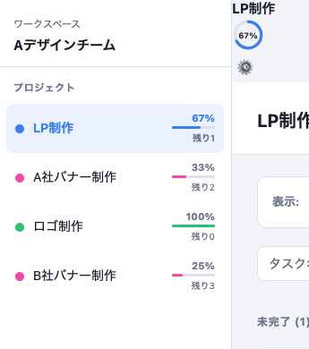
メンバーの名前をタップするだけで自分のタスクだけに絞れます。毎日の「今日やること」確認がスムーズ。チーム全員・自分だけ、いつでも切り替えられます。
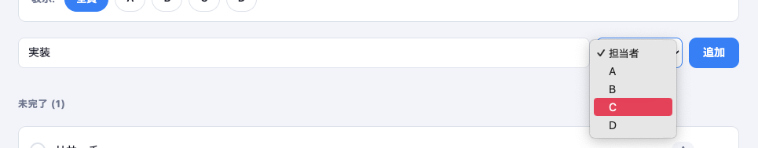
チェックを入れるたびに進捗リングがぐるっと進みます。「あとどれくらいか」が視覚的に伝わるので、チームのモチベーション維持にも効果的です。
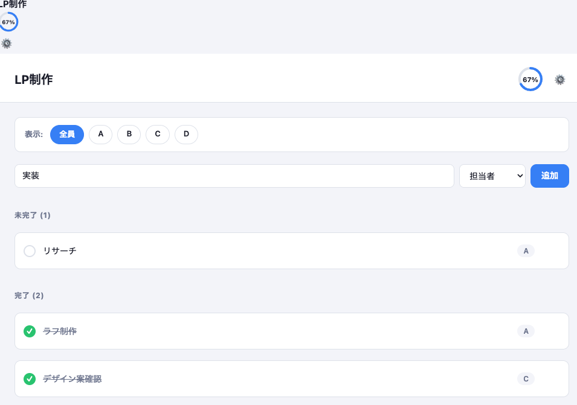
大学の課題グループから、フリーランスの共同制作まで。チームで何かを作るすべての場面でお役に立てます。
グループ課題や卒業制作で、誰が何を担当するかをスッキリ整理。締め切り前に慌てなくなります。
LP制作・バナー・映像など複数の案件を、カラー分けしてまとめて管理できます。
2〜5人くらいの小さなチームにぴったり。大げさなツールなしで、シンプルに進捗を共有できます。
「入れたけど結局使わなくなった」ってなりがちですよね。このツールは「制作しながら使い続けられること」だけを考えて作りました。難しいことは何もないです。
HTMLファイルをダウンロードしてブラウザで開くだけで使えます。アプリのインストールも、アカウント作成も一切不要。チームメンバーへの共有は、発行された招待URLを送るだけで完了します。メンバーはパスワードを入れるだけで即入室できます。
月額料金なし、人数制限なし、機能制限なし。Googleアカウントさえあれば、何人で使っても、何プロジェクト作っても、ずっと無料です。
タスクや進捗のデータはすべて自分のGoogleスプレッドシートに保存されます。外部サービスにデータを預けないので、サービス終了でデータが消える心配がありません。スプレッドシートを直接開いて確認・編集することもできます。
大手企業向けのプロジェクト管理ツールではなく、デザイン・イラスト・映像・Web制作など、クリエイターチームの現場感覚から生まれたツールです。余計な機能を省いて、制作に集中できる環境を作ることを目指しました。
管理者が1回だけ設定すれば、あとはメンバーが招待URLを開いてパスワードを入れるだけ。難しい操作は一切ありません。
このページの「ダウンロード」ボタンを押してHTMLファイルを保存し、ブラウザで開きます。「新規作成」タブを選択してセットアップを開始してください。
スプレッドシートのメニューバーから「拡張機能」をクリックし、「Apps Script」を選択します。
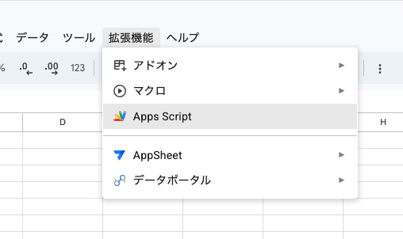
アプリのセットアップ画面に表示されているコードをコピーボタンで取得し、Apps Scriptのエディタに貼り付けて保存（Command+S）します。プログラミングの知識は不要です。
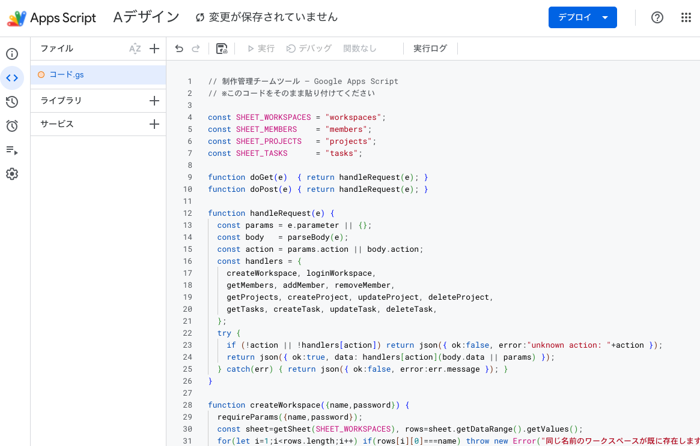
右上の「デプロイ」ボタンをクリックし「新しいデプロイ」を選択。種類の選択から「ウェブアプリ」を選びます。
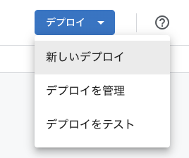
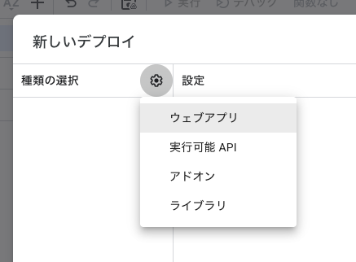
「アクセスできるユーザー」を「全員」に変更して「デプロイ」ボタンを押します。Googleの確認画面が表示されたら「Advanced」→「Go to (unsafe)」→「Continue」の順に進んでください。
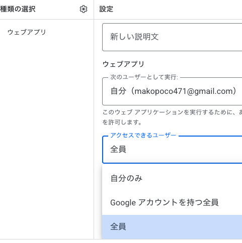
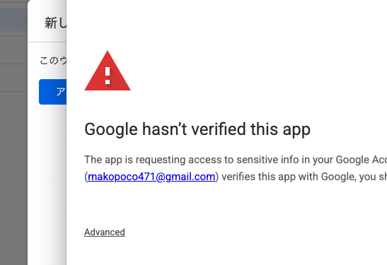
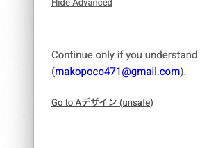
デプロイが完了すると「ウェブアプリのURL」が発行されます。「コピー」ボタンでURLを取得してください。
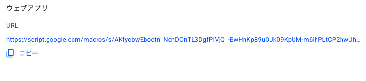
アプリのセットアップ画面にURLを貼り付けて「次へ」。ワークスペース名とパスワードを設定すれば完了です。自動で発行される招待URLをメンバーに送れば、パスワードを入れるだけで入室できます。
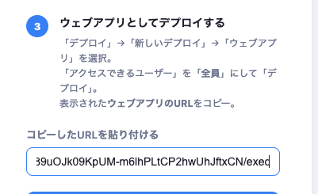
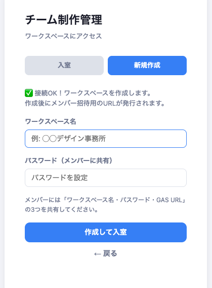
Googleアカウントが必要です（無料）